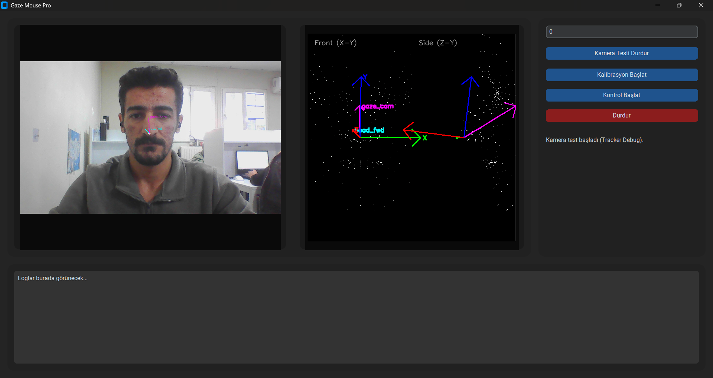
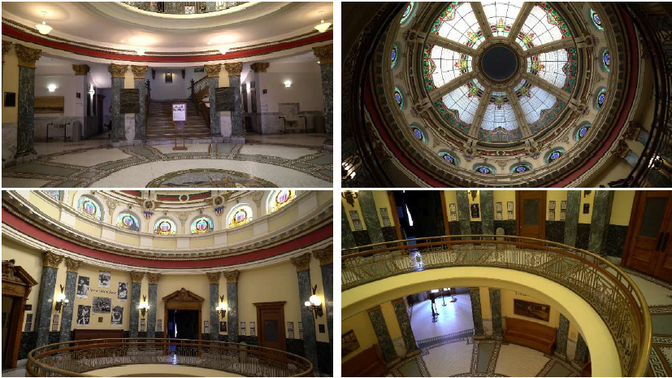
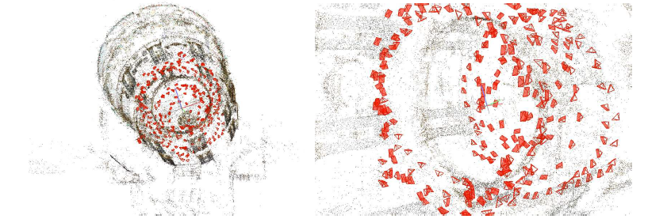
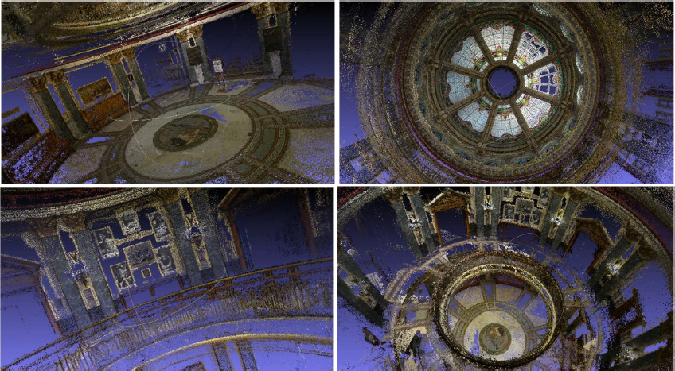
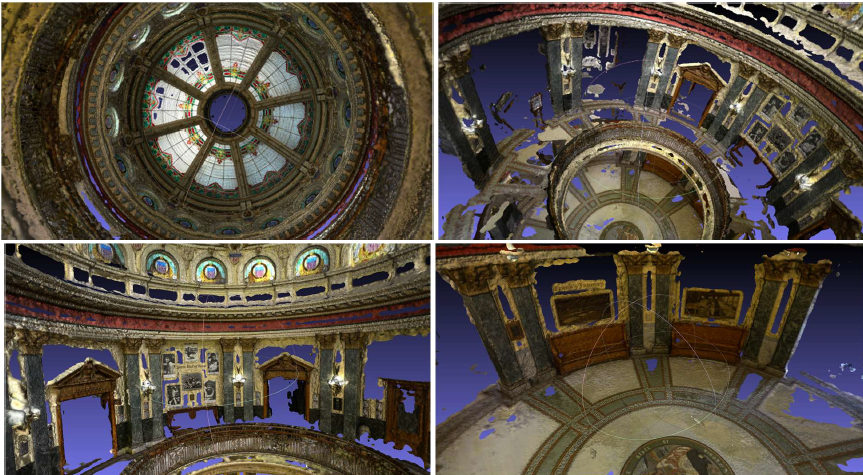

Bu sayfada üzerinde çalıştığım projelerin amaçlarını, kullanılan yöntemleri ve teknik içeriklerini detaylı şekilde paylaşıyorum.
Web kamerası üzerinden göz hareketlerini algılayarak imleç kontrolü sağlamayı amaçlayan bir bilgisayarla görü projesi.
Yalnızca RGB görüntüler kullanılarak iç mekân sahnelerinin üç boyutlu olarak yeniden oluşturulmasını hedefleyen bir çalışma.
Bu projede, standart bir web kamerası aracılığıyla kullanıcının bakış yönünü tespit ederek bilgisayar imlecinin kontrol edilmesi amaçlanmıştır.
Kullanıcının göz hareketlerini izleyerek fare imlecini kontrol edebilen, daha doğal ve erişilebilir bir etkileşim sistemi geliştirmek.
Çalışma sürecinde yüz ve göz referans noktalarının çıkarımı, bakış yönünün tahmini, ekran koordinatlarına eşleme ve daha stabil kullanım için filtreleme yöntemleri üzerinde çalışılmıştır.

Bu projede, yalnızca RGB görüntüler kullanılarak iç mekân sahnelerinin 3B rekonstrüksiyonunun elde edilmesi hedeflenmektedir.
RGB fotoğraflardan iç mekânın üç boyutlu yapısını yeniden oluşturmak ve elde edilen sahnede gerçek zamanlı gezinme ile nesne düzeyinde etkileşim sağlamak.
Bu çalışma kapsamında 3B sahne oluşturma, nesne ayrıştırma, görüntü tabanlı modelleme ve etkileşimli sahne sunumu gibi başlıklar üzerinde araştırma ve geliştirme süreci devam etmektedir.




Şekildeki görseller sırası ile ham görüntülerden başlayıp SFM-MVS-TEXTURE adımlarından geçerek 3B iç mekan oluşum görselleri